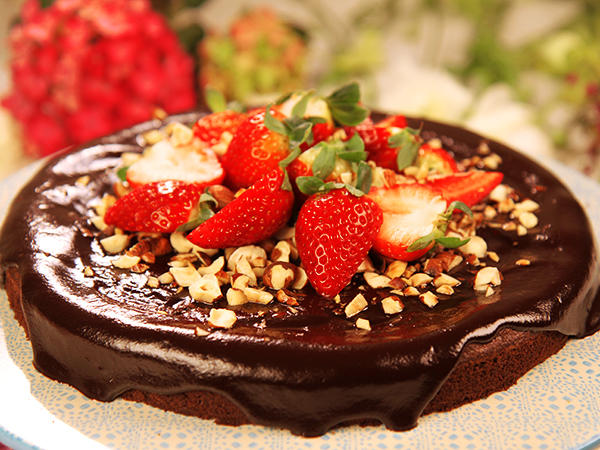

Chokladkaka toppad med jordgubbar och nötter

Här får ni ta del av en fantastisk kaka, perfekt när du vill bjuda dina vänner på något gott!
Ingridienser
- 100 g smör
- 2 ägg
- 2 dl socker
- 1 dl vetemjöl
- 1/2 dl kakao
- 1 tsk vaniljsocker
Garnering
Så här gör du
- Sätt ugnen på 175 grader.
- Smält smöret och låt det svalna.
- Vispa ägg och socker pösigt. Blanda samman mjöl, kakao och vaniljsocker. Rör ner mjölblandningen i äggsmeten. Tillsätt smöret.
- Grädda i ca 25 minuter.
- Chokladkräm: Värm grädden till kokpunkten i en tjockbottnad kastrull. Ta den från värmen och tillsätt chokladen i bitar och vaniljsocker. Rör till chokladen smält.
- Låt krämen svalna och häll den i en skål. Ställ den i kylen. Rör i den då och då tills den tjocknat till en kräm. Det tar ca 1 timme.
- Bre chokladkrämen på kakan.
- Garnering: Rensa bären och lägg dem på kakan.
Lycka till!